In this document you will learn how to create and manage Modeling Projects, which are used in Sirius to organize your models and their representations (diagrams, tables, etc.).
The Sirius system is used to create, visualize and edit your models using interactive editors called modelers. These modelers can be of different kinds, depending on the type of visual representations. Out of the box, Sirius supports three different dialects (kinds of representations) diagrams (graphical modelers), tables, and trees (hierarchical representations). New dialects can be added through programming.
Provided with the right configuration file (something called a Viewpoint Specification Model or VSM for short), Sirius can represent any model which is compatible with EMF (the de facto standard for modeling tools in the Eclipse world). This includes standards like UML, SysML, TOGAF etc., but also any Domain Specific Model ( DSM) which you can create to better suit your specific needs. For one kind of model (e.g. TOGAF, which is used to describe Enterprise Architectures), several Sirius configurations can be created, each one specific to a particular viewpoint. Different kinds of users can thus see the same model through different viewpoints, each adapted to his preoccupations: from the same TOGAF model, the CEO will want to see a general overview of how the company is organized, the COO may want a view more oriented towards processes, and a system administrator will need a view on just the parts which concern software systems put in place to implement these processes.
Sirius makes it easy for architects to create Viewpoint Specification Model suited for any kind of model. These are then packaged as Eclipse plug-ins that you can install to use their modelers. Note that Sirius itself must also be installed for the viewpoints to run (they are not self-sufficient).
As an end-user, you will use already configured modelers specially adapted to your needs. If you want to create your own modelers, please refer to the Sirius Specifier Manual. Simple modelers do not require any programming to create, and once you know the basics, a new graphical modeler can be created from scratch in less than an hour.
To use already existing modelers (assuming the plug-ins which provide them are installed), you will need to know the following notions (see also the Glossary ):
.uml files for UML models) or based on a
Domain Specific Model (sometimes called
Domain Specific Language) which was specially created for your needs.
.aird extension (typically
representations.aird). Representation files reference the semantic model(s) they contain representations for, but you semantic models are kept unaware (and unpolluted) of any Sirius-specific data.
The rest of this document explains how you can use the Sirius UI to create and manipulate representations of your semantic models. Each viewpoint and representation is specific. We will use the Family example for illustration purpose, but note that not all features may be available with all kinds of models and all viewpoints.
New users can skip this section safely. For users of previous version who have existing models, this section explains the required steps to use their models with this version, and gives an overview of the main UI changes. See also the release notes for more details.
Representation files are now automatically migrated when opened. This migration is transparent for the end-user. While a representation file is not saved, the automatic migration will be replayed at the next opening.
You will notice some radical changes in the user interface. The most important change is the disappearance of the Model Content view. It has been replaced with a streamlined UI which integrates directly into the Eclipse explorer view. The notion of “Local Session” has disappeared from the user interface; its management has been made as transparent as possible so you do not have to deal with it except in some very specific circumstances.
The recommended way to use Sirius is now to use the new notion of
Modeling Project described below. If you already have existing Sirius representation files (
aird files), a
conversion is necessary. Modeling projects have some constraints on how the files are organized. If you do not want or can not convert your models to the new recommended way, a
legacy mode is provided which does not require any change to your projects organisation (beyond the files' migration). Note that the support for this legacy mode is not guaranteed to be maintained in all future versions of Sirius.
When you first start Sirius, it opens on the Modeling perspective. This new perspective provides all the required views, wizards and menus to exploit designers as an end user.
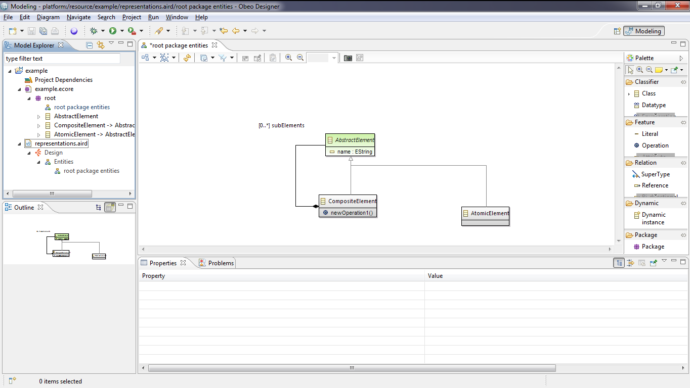The Modeling perspective provides the following views by default:
This perspective also provides useful actions available by right-clicking in the view Model Explorer .
As usual in Eclipse, this perspective can be customized at will by adding, moving or removing views, shortcuts, etc.
The Model Explorer view shows all the projects in you workspace and the files they contain. It adds some special capabilities to Modeling Projects, to allow you to view and manipulate your semantic models and their Sirius representations directly inside the explorer.
For instance, inside the Model Explorer, semantic models and representation files which are part of a Modeling Project or model files can be expanded to display their content directly:
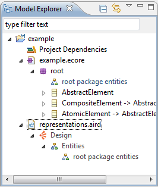In the example above, the
example modeling project (note the blue “M” decorator on the project icon) contains a single semantic model, the
example.ecore file, and a single representation file
representations.aird. Both can be expanded directly from inside the
Model Explorer view, to discover the structure of the semantic model and the graphical representations which already exist.
The Model Explorer supports the “Link with Editor” feature, which can be enabled by pressing the icon in the top right corner of the view (the one with two horizontal arrows, pressed in the screenshot above). When this mode is enabled, if you have a representation opened, clicking anywhere on it will automatically select the corresponding semantic element(s) inside the Model Explorer (expanding the project and files if necessary). Conversely, if you select one or several semantic element(s) from one of your semantic models in the Model Explorer view and if these elements are represented somewhere on the opened editor, they will be automatically selected. This can be very useful when you have many projects and representation or large representations to avoid getting lost.
The
Model Explorer also supports filtering of elements from inside
Modeling Projects (and only these elements): if you enter some text in the search box at the top of the view, the view will filter out all the elements which do not match your text. For example if you enter
Element in the search box, only the model elements whose name starts with
Element will be shown. You can use the
* and
? special characters in your search string to mean respectively “any text” (including none) and “any single character”. For example the search string
*Element will show all elements whose name
contains the string
Element anywhere.
The
Model Explorer allows to group tree items with an intermediary level. This feature clearly enhances the expand time on huge models.
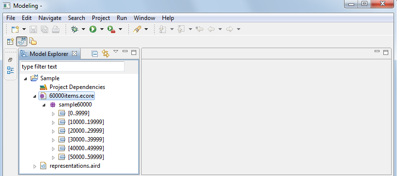
You can customize this feature with three preferences:
Note: We see that this feature need to be enabled and have a hierarchy context above the threshold to be triggered.
In another hand, to keep a consistency, the threshold and group size value need to follow these rules:
When you update these preferences, you need to make a refresh (F5) on all resources already expanded to get an updated tree items.
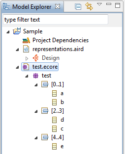
This feature is also enabled on tree selection wizards in Sirius diagram tools.
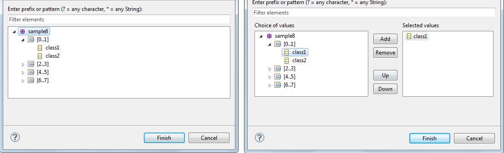
Modeling Projects, which are used in Sirius to organize and manage your models and their representations (diagrams, tables, etc.).
Modeling projects are responsible for storing the representation data (diagrams, tables, etc.) in special
representation files with the extension
.aird. Modeling projects can also be used to store the semantic data of your models but this is not mandatory. Semantic data can be stored anywhere, but representation data
must be stored in
aird files within modeling projects
(the only exception is the
legacy mode supported for compatibility with previous versions).
Moreover, modeling projects provide actions to manage viewpoints and representations: viewpoints are associated to a modeling project, so the viewpoints that will be available for a given Modeling Project’s representations are the one attached to this project. Viewpoints selection is made by right-clicking on a Modeling Project and choosing Viewpoints Selection.
To create a new Modeling Project, simply right-click in the Model Explorer (or use the File > New... menu) and select New > Modeling Project.
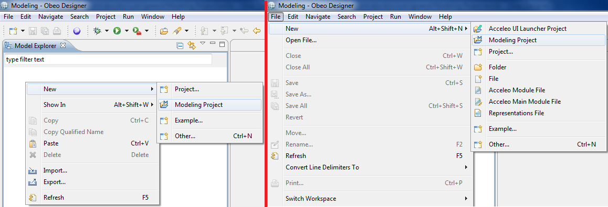A wizard opens, asking for a mandatory project name. Entering an invalid project name will result in an error message. By default, the modeling project will be created in the workspace’s location, but this can be changed: just uncheck “Use default location” and enter the path to the location where you want your modeling project to be created.
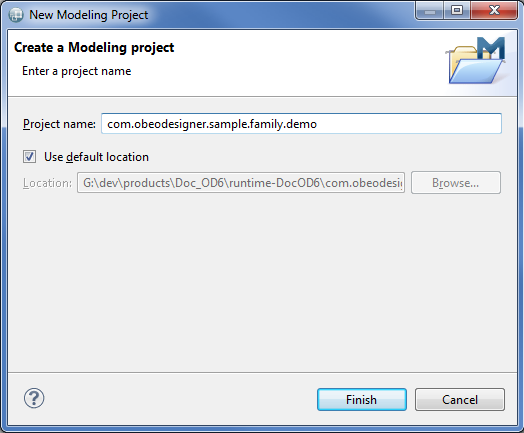When you are done, click Finish to actually create the modeling project. It will appear in the Model Explorer, and by default contains two elements:
representations.aird, which is the top-level representation file for the project.

It can be useful to convert an existing project into a Modeling Project, since it is necessary for example to be able to create representations in it. An action is available to do this. Right-click on any project, then select Configure... > Convert to Modeling Project.
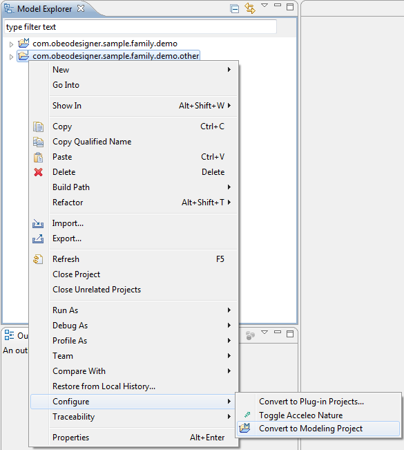This action does not alter in any way the nature of the project. For example, if the project was a Java project, it will still be a Java project afterwards. The action just adds the Modeling Project nature to the selected project.
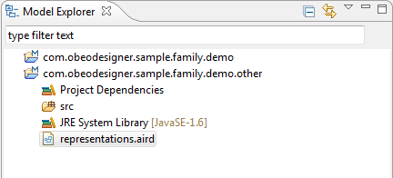If there is a suitable representation file, it will be considered to be the top-level representation file for the converted project. Otherwise, a new representation file named representations.aird will be created automatically at the root of the project.
If for some reason you want to revert the conversion of a project into a Modeling Project, you can use the Configure... > Remove Modeling Project Nature action on the context menu of the project.
The action will simply remove the nature from the project itself, but will not remove or alter the representation files stored inside. You will still be able to use your representations using the legacy mode.
Each modeling project has a set of viewpoints which are
enabled. This controls what kind of representations you can create on the semantic models inside the project. The set of viewpoints which are available to you will depend on what plug-ins you have installed, and on the type of semantic models which are inside the modeling projects. For example, even if you have installed the UML Designer, you will only be able to enable to corresponding viewpoints if your project contains UML models (
.uml files).
To select which viewpoints are enable on your project, simply use the Viewpoints Selection action in the context menu of the project itself. A dialog box will open which will show you all the viewpoints which are compatible with your project (depending on the kind of models it contains). You can check or un-check each viewpoint individually to enable or disable it, and click OK to validate your choice. Note that some viewpoints depend on other ones (especially viewpoints which extend other ones). If your selection of viewpoints does not include all the required dependencies, a message will be shown to indicate which dependencies are not resolved. You can then adjust your selection and re-validate it.
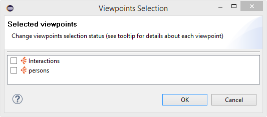 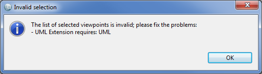A modeling project will always have an element called Project Dependencies available. This is used to import external models, which are stored outside of the modeling project but used in it, for instance for certain representations of the project.
To use a semantic model stored outside of the current modeling project, it must be added to the project dependencies. That will not change its location but will simply allow access to its content.
To add an external model to a modeling project, right-click on
Project Dependencies then select
Add Model.
Project dependencies can contain both semantic models and graphical models (
i.e. representations files)
A wizard page opens, allowing you to enter the URI of the model to add. If the model is in the workspace, you can use the button Browse Workspace to look for it. If the model in in the file system, you can use the button Browse File System... to find it. Otherwise, you must enter the model’s URI manually.
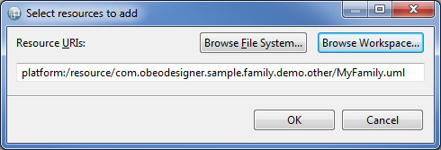Once the model’s URI is entered, click OK. The model is added under Project Dependencies and a pop-up window is displayed to allow you to select the viewpoints you need. Just select or unselect the viewpoints you want and click OK when you’re done.
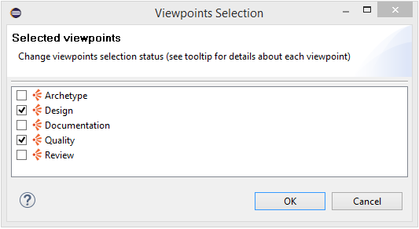Referenced models can be removed if they are not used, just right-click on the model in the Model Dependencies and select Remove.
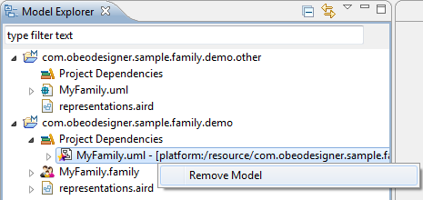Note: If the referenced model is a non-modeling project in the workspace, the corresponding file will be decorated with an M in the upper right corner to indicate that this model is used in a Modeling Project. This decorator disappears if the modeling projects that use this model are closed.
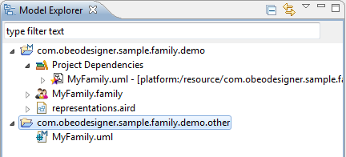Any model available in a modeling project, whether physically located in the modeling project or just referenced by it ( via the Project Dependencies), will be expandable. This means that the content of any model used or referenced in a modeling project can be browse directly in the modeling project, in the view Model Explorer.
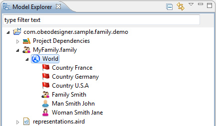When browsing a model in a modeling project, several actions can be accessed by right-clicking on a model element:
Representations files are used to store representations. They have the extension
.aird.
Such files contain the data needed to display the diagrams (or other kinds of representations) but they do not contain semantic data, which are stored by the models themselves.
Representations files located in modeling projects can be unfolded to browse their content.
The content of a representations file is structured in three levels:
The first level displays the available viewpoints, which match the viewpoints selected on the
modeling project.
The second level, inside a given viewpoint, displays
representation types. Only
representation types for which at least one representation exists are displayed.
The third level, inside a
representation type, displays the representations actually present for this type.
A repair action is available in representations file context menu
In some case, you will need to execute a repair action on your representations file, especially when you have modified the VSM (odesign file).
In most of case, a simple refresh of representation should be enough. Note that repair action could take some time depending on representations file size.
There is one important constraint regarding modeling projects. They can only contain one top-level representations file.
A top-level
representations file is a file that stores representations. Such files can be modularized, which means they can be split in several files, but there is always one
master file which references the others and is referenced by none. This file is the top-level file, and there can be only one per
modeling project.
To say this differently: If you want to have several independent
representations files, each of them must be placed in its own
modeling project.
As mentioned before, models in a Modeling Project are automatically loaded when first needed. They are not unloaded automatically. If you want them to be unloaded (and retreive the associated memory), you must close the modeling project itself.
Besides, all representations of a given modeling project are part of the same model. Any modification to one of these representations will cause all of them to go dirty (which means that a little * symbol will be displayed in the editor title to indicate that the file contains unsaved modifications). Conversely, saving any representation of a modeling project saves all of them. What is actually saved is the representations file, which contains all the representations.
Representations are stored in
*.aird files. An
*.aird file is called a
Representations File
.
A representation can be a diagram, a table, a cross-table, a tree, etc.
Note: Representations files located in modeling projects are loaded automatically.
There are two ways of creating a representation. Both take place in the Model Explorer.
The first way of creating a representation is to navigate in a model to an element for which you know there is a representation type available. Right-click on this element, then select New Representation > <Representation type>.
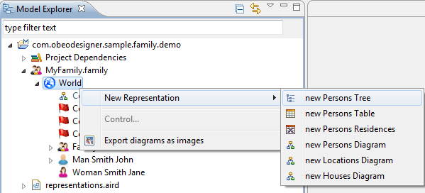The other way consists in right-clicking on the Modeling Project itself. Select Create Representation.
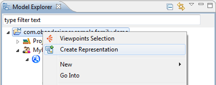This opens a wizard that displays available viewpoints and available
representation types in these viewpoints.
Just select the type of representation you want to create and click
Next >.
The wizard then displays the available models (those that are in the current modeling project and those that are imported). When you browse the content of these models, you will notice that their content is filtered to display only elements that are relevant for the selected representation type.
Select the element for which you want to create a representation and click
Finish.
Either way, a pop-up window appears, where you can enter a name for the new representation. A default name is proposed. Click OK.
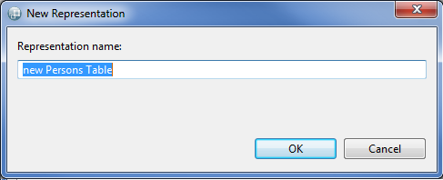If there are several representations files in the current modeling project, a pop-up window appears before the actual creation to allow you to select the representations file that will contain the representation.
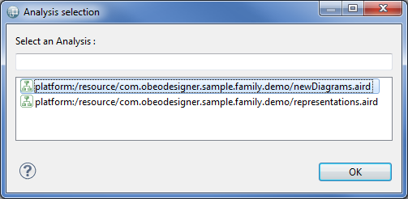The representation is then created and opened.
Available representations can be accessed by browsing representation files to the third level. Right-clicking on a representation then offers several actions:
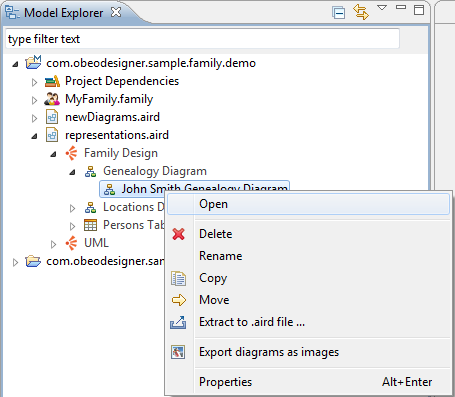The legacy UI mode is made available for users of previous versions of Sirius who can not or do not want to convert their projects into Modeling Projects. As such, it works with all existing representation files (provided they have been migrated if required), even if they are inside non-Modeling projects or if there are several top-level representation files inside the same project.
When using the legacy mode, you must explicitly open a representation file using the Open action in the context menu of the file. This is equivalent to opening a session in previous versions of Sirius. Once the representation file is open, you can expand it, and inside you will find all the same elements that you would find inside a normal Modeling Project: the semantic model(s) associated to the representation file, and the representations themselves.
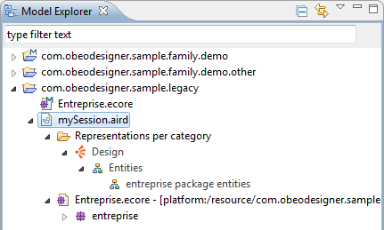All the actions which are normally performed on the modeling project itslef, like selecting which viewpoints are enabled, are available in the context menu of the representation file itself:
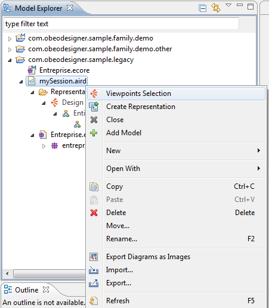Note that the Project dependencies entry is not available in legacy mode. To associate new semantic models to the representation file, use the Add model action directly on the representation file.
Once you have finished using the models and or representations, you must explitly close it (equivalent to closing the session in previous versions) by using the Close action on the top-level representation file.